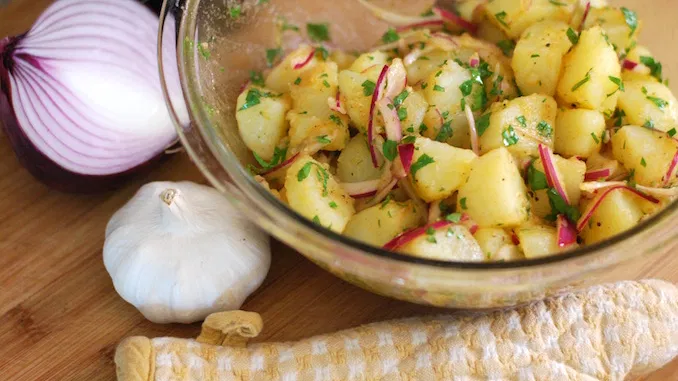

Немецкий картофельный салат

Ингредиенты:
- картофель - 750 грамм
- бекон 100 грамм
- зелёный лук (опционально)
- красный лук - 0,5 головки
- соленые огурцы - 3-4 шт
- лимонный сок или яблочный уксус - 1 ст.ложка
- масло растительное - 3 ст.ложка
- горчица зернистая - 1 ст. ложка
- копченая паприка - 0,5 ч.ложки (опционально)
- соль - по вкусу
Приготовление:
1. Сварить картофель.
2. Нарезать бекон кусочками, обжарить, слить масло.
3. Почистить и мелко нарезать огурцы.
4. Нарезать красный лук полукольцами.
5. Смешать масло, уксус, горчицу, паприку, взбить блендаром до эмульсии.
6. Нарезать картофель четвертинками.
7. Смешать картофель, бекон, красный лук и заправку, аккуратно, не давя картофель. Украсить зеленым луком.
8. Дать впитать заправку и настоятся 15 минут.